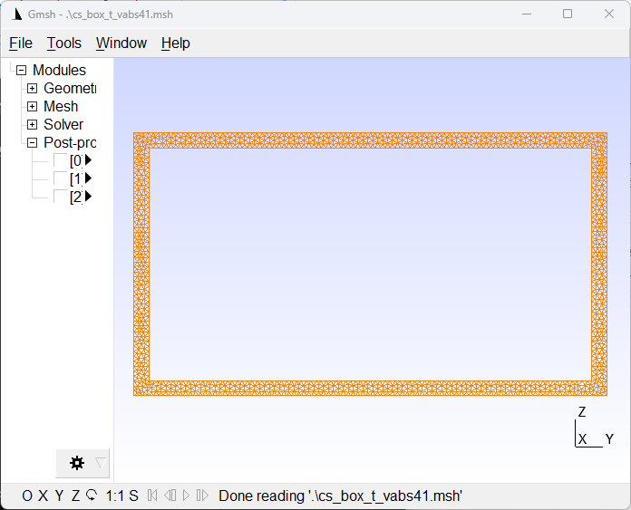

Convert Structure Gene Data¶
One of the main capabilities of sgio is to convert SG data between different formats.
This can be done using the sgio.convert() function or the sgio convert command.
Convert VABS Cross-sectional Data to Gmsh for Visualization¶
It is frequently needed to visualize a cross-section when only the VABS input file is available. This can be done either through the package API or the command line interface (CLI).
API¶
An example is provided in examples/convert_mesh_data_vabs2gmsh.py.
This example converts a VABS file of a box cross-sectional (examples/files/cs_box_t_vabs41.sg) to a Gmsh file (examples/files/cs_box_t_vabs41.msh) for visualization.
import sgio
fn_in = 'files/cs_box_t_vabs41.sg'
fn_out = 'files/cs_box_t_vabs41.msh'
sg = sgio.convert(
fn_in, fn_out, 'vabs', 'gmsh',
model_type='BM2', mesh_only=True
)
print(sg)
CLI¶
cd sgio/examples/files
sgio convert -ff vabs -tf gmsh -m BM2 --mesh-only cs_box_t_vabs41.sg cs_box_t_vabs41.msh
After the conversion, users can open the file in Gmsh to see the cross-section.

Visualization of the box cross-section in Gmsh.¶
Note
Gmsh is not included in the package. Users need to install it separately.